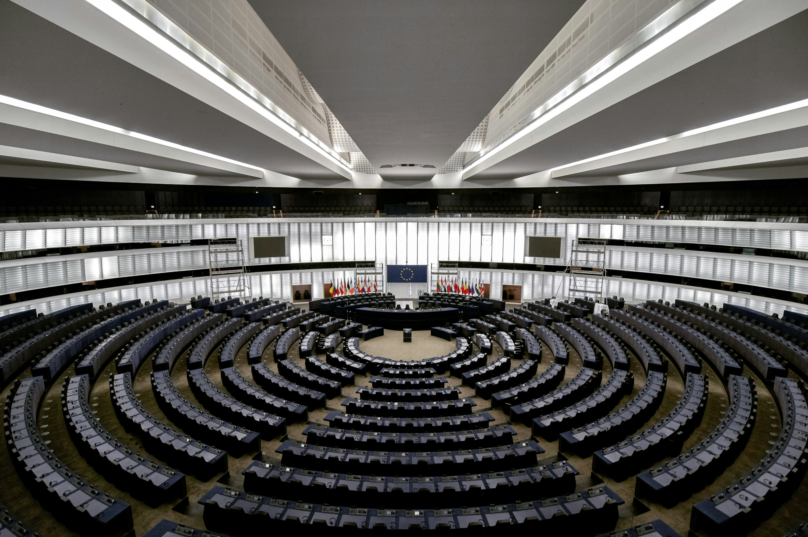

In today's lesson, we will delve into fiscal and monetary policies. Fiscal policy involves government spending and tax policies to influence macroeconomic conditions. Monetary policy, managed by a nation's central bank, deals with the control of money supply and interest rates to achieve economic objectives such as controlling inflation and ensuring price stability.
Let's begin!
Fiscal policy
Fiscal policy refers to the government’s approach to taxation, spending, and budgeting. It aims to influence economic activity and overall macroeconomic conditions.
Key components
-
Taxation
Governments collect taxes from individuals and businesses.
Tax rates impact disposable income, consumption, and investment decisions.
-
Government Spending
Governments allocate funds for public goods and services (e.g., infrastructure, education, healthcare).
Increased spending can stimulate economic growth.
-
Budget Deficits/Surpluses
A budget deficit occurs when government spending exceeds revenue (taxes).
A budget surplus occurs when revenue exceeds spending.
These impact overall demand and borrowing.
Role and Impact
-
Stimulus: During recessions, governments increase spending or reduce taxes to boost demand.
-
Austerity: In times of inflation or excessive debt, governments may cut spending or raise taxes.
-
Multiplier Effect: Government spending has a multiplier effect on the economy—each dollar spent generates additional economic activity.

Monetary Policy
Monetary policy involves managing the money supply and interest rates by central banks (e.g., the U.S. Federal Reserve) to influence economic outcomes.
Key tools
-
Open Market Operations
Central banks buy/sell government bonds to inject or withdraw money from circulation.
-
Reserve Requirements:
By setting reserve ratios, central banks control the money created when banks lend.
-
Discount Rate
The interest rate charged on loans to financial institutions.
Impacts short-term interest rates across the economy.
Role and Impact
-
Stimulating Growth: Lower interest rates encourage borrowing and spending.
-
Controlling Inflation: Higher rates curb spending and prevent overheating.
-
Liquidity Management: Central banks ensure adequate liquidity in the banking system.
Remember, fiscal policy is like steering a ship with government spending and taxation, while monetary policy adjusts the engine’s throttle by managing interest rates and money supply. Together, they navigate the economic waters, aiming for smooth sailing and prosperity. 🌟